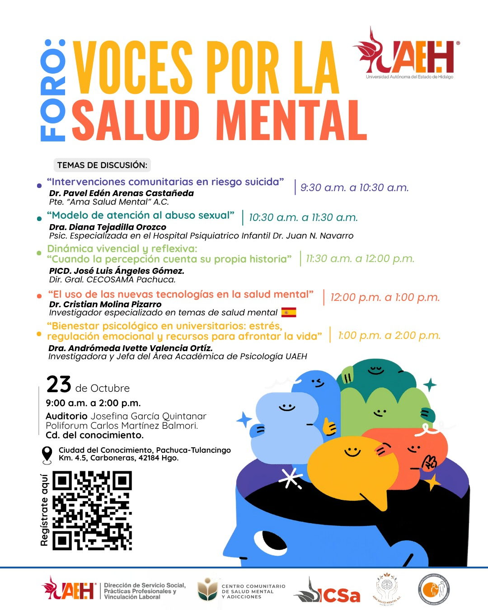

9:30
a.m.
a.m.
Un espacio de diálogo, reflexión y participación para abordar temas fundamentales de la salud mental desde distintas perspectivas.
Regístrate al foro
Voces por la Salud Mental reúne especialistas y comunidad universitaria para conversar sobre prevención del suicidio, atención al abuso sexual, bienestar psicológico y el impacto de las nuevas tecnologías en la salud mental.
La jornada busca promover una mirada integral, generar conciencia y fortalecer herramientas para afrontar los retos emocionales de la vida cotidiana, especialmente en los espacios universitarios y comunitarios.
Consulta los temas, horarios y especialistas que participarán.
En este apartado puedes incorporar la fotografía y reseña completa de cada ponente.
Pte. “Ama Salud Mental” A.C.
Espacio destinado para la reseña curricular y profesional del ponente.
Psic. especializada en el Hospital Psiquiátrico Infantil Dr. Juan N. Navarro
Espacio destinado para la reseña curricular y profesional de la ponente.
Dir. Gral. CECOSAMÁ Pachuca
Espacio destinado para la reseña curricular y profesional del ponente.
Investigador especializado en temas de salud mental · España
Espacio destinado para la reseña curricular y profesional del ponente.
Investigadora y Jefa del Área Académica de Psicología UAEH
Espacio destinado para la reseña curricular y profesional de la ponente.
El reproductor se activará cuando se agregue el enlace de la transmisión.
Próximamente podrás ver aquí la transmisión en vivo.
Escanea el código QR o utiliza el botón para acceder al formulario de registro.
Abrir registro23 de octubre · 9:00 a.m. a 2:00 p.m.
Auditorio Josefina García Quintanar
Poliforum Carlos Martínez Balmori
Ciudad del Conocimiento, Pachuca–Tulancingo Km. 4.5, Carboneras, 42184 Hgo.